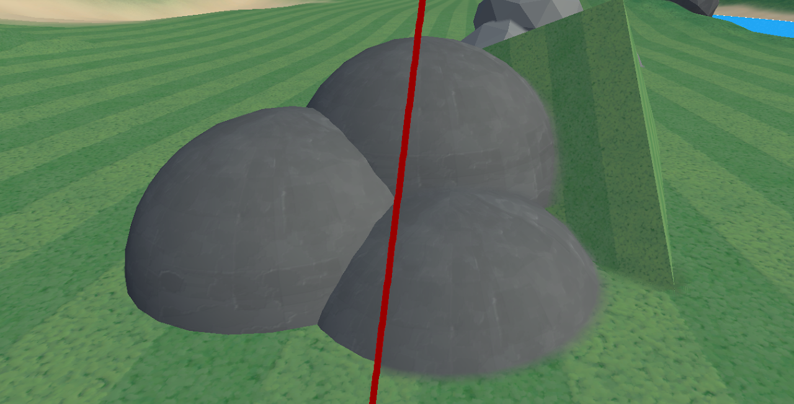

Idea

When putting meshes/objects together in games the seam between them can look very jarring. This is especially the case with objects used for terrain. By merging and blending edges together seams look way smoother and more realistic.